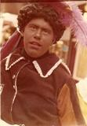
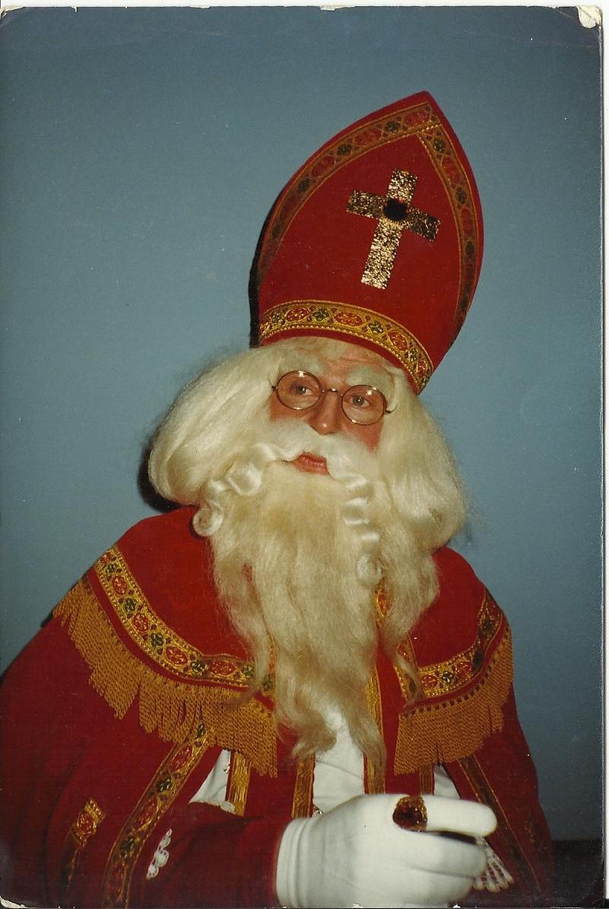

WIE ZIJN WIJ?
GESCHIEDENIS STICHTING SINT NICOLAAS GENOOTSCHAP
Het begint als Marcel Karhof nog een kleuter is en de Sint en zijn Pieten op visite komen bij hem thuis. Zijn neefjes en zusje komen allemaal braaf bij de Sint maar Marcel is in geen velden of wegen te bekennen. Was hij dit jaar toch weer niet helemaal braaf geweest? Hij werd gevonden op de w.c. ’Ziek’ zo zei hij Toevallig of niet? Als Sint en zijn Pieten weg zijn gaat het een stuk beter.
Tijdens de carnavalsperiode gaat hij naar kindercarnaval in een pagepakje. Het pakje lijkt verdacht veel op een Pietenpak met baret en veer. In de Sinterklaas-tijd werd dit pakje uit de kast gehaald om als witte piet de Sint in Den Helder een beetje te helpen. Het virus neemt ernstige vormen aan als er leerlingen van de muziekschool worden gevraagd om op Noorderhaven als zwartepiet muziek te maken.
De eerste kennismaking met een sinterklaascentrale werkte zeer aanstekelijk. Marcel sloot zich aan bij deze organisatie en was overal voor in. Zo werd een schmink cursus doorlopen. Oefenen op elkaar en met een zwarte kop naar huis. Mooie jaren waren dat, intochten voor de T.V., musicals en veel huisbezoeken maakten deel uit van de activiteiten.
 
In die jaren is Daan de Mooy de Sinterklaas. Deze man zag Marcel als voorbeeld. De eis van Daan was altijd dat zijn staf keurig gepoetst mee ging. Deze staf heeft Marcel heel wat keren gepoetst. Een unieke staf! Handgemaakt door koperslagers op de voormalige marinewerf in Den Helder. Niet te tillen zo zwaar! En nu mag u raden wie er na het overlijden van Daan de Mooij deze staf heeft gekregen. En een ding is niet veranderd. Als de Sint op pad gaat is zijn staf nog steeds keurig gepoetst.
15 JAAR LATER...
15 jaar later blijft het virus zich blijft ontwikkelen, kleine Marcel is groot geworden. Zijn moeder Thea Karhof heeft al vaak aangegeven dat het tijd wordt het Pieten-pak te ruilen voor de tabberd. Dit heeft zij echter niet meer mee mogen maken en sterft zij veel te jong aan de gevolgen van kanker. In de nalatenschap vinden we een spaarpotje met daarin een behoorlijk bedrag en een briefje. Voor Marcels Sinterklaas-pak staat er op! Aan een van haar vriendinnen heeft Thea Karhof gevraagd of zij een pak wil maken. Deze wens wordt door Ank Koevermans vervuld. Samen met Ilona Hoogvorst maakt zij een prachtig pak. Ook van hun hand is het eerste Kerstman-pak.

De stichting is opgericht in de geest van Marcel's moeder! Een van haar uitspraken was:” Als je het talent hebt gekregen mensen blij en gelukkig te maken mag je er geen financieel gewin van hebben”. In alle jaren is ook het contact met ome Daan gebleven . Helaas is hij al jaren terug overleden.Maar ook is hij nog steeds een beetje bij ons betrokken, de staf die Marcel zo vaak heeft moeten poetsen hebben we na zijn overlijden gekregen.
De stichting groeit verder. Ank zit dagen te naaien. De eerste serie van 8 geheel in eigen beheer ontworpen en genaaide Pietenpakken zijn klaar. Van een klein slaapkamertje moesten we toch uitzien naar een ruimte waar we de kleding konden opslaan. Een ruimte van waaruit we de activiteiten verder kunnen ontplooien. We vinden locatie in de Petrus en Paulus Kerk. Hier blijven we ruim 4 jaar. In de maanden november en december gebruiken we het hele appartement en de rest van het jaar voor de opslag van de kleding. Maar hieraan kwam een einde . De pastorie was nodig voor andere zaken. Hoe verder? De kleding en andere attributen mee terug naar huis? Dat was onmogelijk.
Een gesprek met burgemeester Staatsen biedt oplossing. We mogen een woonhuis van de gemeente huren.
Helaas kregen we op 31 maart 2004 ongewenst bezoek. Inbrekers namen vele pakken, pruiken, baardstellen en inventaris mee. Waar deze zaken gebleven zijn is tot op heden nog steeds niet opgelost. Ook het onderzoek van de politie heeft niks opgeleverd. De financiële schade is heel groot maar de emotionele schade is nog veel groter. Want ook het pak dat Thea Karhof had laten maken voor Marcel is gestolen.
Marcel heeft overwogen om alles te verkopen en de opbrengst aan de Doe Een Wens stichting te geven. Hij had niet gerekend op de vele hartverwarmende reacties en giften van mensen instellingen en bedrijven. Na heel veel werk verzet te hebben in een tijdsbestek van 6 maanden is de stichting nu weer helemaal terug. We zullen nog vele jaren ons kunnen inzetten voor o.a. Doe Een Wens stichting. Iets waar we geweldig trots op zijn!
STAND VAN ZAKEN NA 2004
Momenteel is het Sint Nicolaas Genootschap nog steeds actief. We verzorgen al vele jaren de intochten van Sint Nicolaas in zowel Julianadorp als in Den Helder. Dit in samenwerking met de Culturele Vereniging Julianadorp en de Helders Ondernemers Binnenstad (HOB)Ook hebben we medewerking gegeven aan diverse TV producties en leverden we de Pieten voor 3 speelfilms. Met een bestand van meer dan 150 vrijwilligers is geen intocht te groot of te klein.